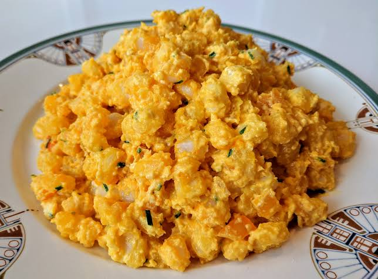

Mote Pillo

Description
A classic Ecuadorian dish: White hominy mixed with eggs, cheese, and chopped oninos
Ingredients
- can of white hominy
- cage-free eggs (3 per serving)
- shredded cheese
- butter
- chopped green onions
- salt and pepper
Steps
- Gather Ingredients
- Chop green onions and have ready nearby
- Rinse hominy in a strainer
- Melt 2 tbsp of butter and toss in hominy
- After hominy has browned and textured to tase, throw in eggs and cook for ~2 minutes
- Toss in shredded cheese and chopped green onions
- Serve hot and enjoy!
Home